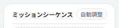
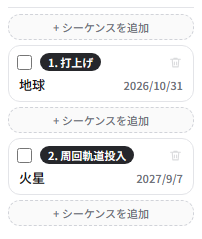
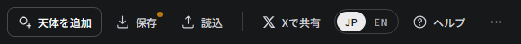
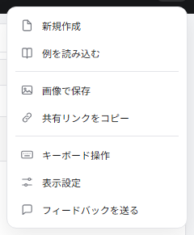
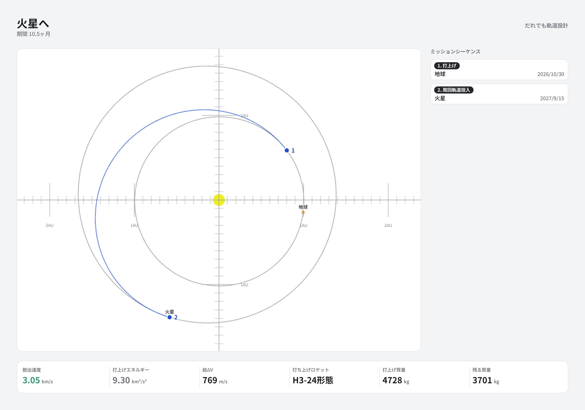

画面の見方
地球から火星まで、1本の軌道を引いてみます。5分もかかりません。
ここで覚えること
- ミッションは「シーケンス」を並べて作る
- 日付を決めると軌道が決まる
- 成績は左下のバーで読む
3つの区画

太陽系ビューは、いま何がどこにあるかを見る場所です。 ドラッグで回転、ホイールで拡大縮小できます。 何も選んでいないときは、ここに出ている時刻はプレビューです。 ← → を押すと日付が動いて、惑星がぐるぐる回ります。 この状態でいくら動かしても、ミッションの日付は変わりません。

ミッションシーケンスは、探査機がこれから何をするかの一覧です。 「打上げ」「スイングバイ」「周回軌道投入」といったシーケンスを上から順に並べていきます。

操作パネルには、一覧で選んだシーケンスの設定と読み取りが出ます。 選んでいるシーケンスによって中身がまるごと入れ替わります。
火星まで引いてみる
-
「+ シーケンスを追加」を2回押します。1つ目は必ず打上げになります。 続けて2つ目のカードを押して選びます。

2つ目は種別が「---」のまま。天体には仮に地球が入っています。 次でこの2つを変えます。 -
操作パネルの天体を「火星」に変えます。 続けてシーケンスの「変更」から「周回軌道投入」を選びます。
種別の選択肢は天体によって変わります。惑星ならスイングバイ・周回軌道投入・大気圏突入、 小惑星ならフライバイ・ランデブーです。重力の大きさが違うので、できることも違います。
-
日付を入れます。カードを選ぶと操作パネルの時刻にそのシーケンスの日付が出るので、 打上げを 2026/10/30、火星到着を 2027/09/15 にします。
日付欄に直接打ち込むほか、-10 -1 +1 +10 のボタン、 キーボードの ← →、太陽系ビューで惑星を掴んでドラッグ、のどれでも動かせます。

青い線が探査機の通り道です。日付を決めた瞬間に、それを結ぶ軌道が計算されます。
成績を読む

| 読み値 | 意味 | 大きいと |
|---|---|---|
| 脱出速度 | 地球の重力を振り切った後に残る速度 | 遠くへ早く行けるが、打ち上げられる質量が減る |
| 総ΔV | 探査機が自分の燃料で出す速度変化の合計 | 燃料を食うので、残る質量が減る |
| 打上げ質量 → 残る質量 | 選んだロケットで打ち上げられる質量と、燃料を使い切った後に残る質量 | 残る質量が大きいほど良い設計 |
色が付きます。青緑なら楽、黄色やオレンジなら苦しい、赤ならかなり苦しい、という目安です。 カーソルを乗せると、その色の境目がいくつなのかも読めます。
自動調整で詰める
日付を手で決めるのは、当たりを付けるところまでで構いません。 ミッションシーケンスの見出しにある自動調整を押すと、 残る質量がいちばん大きくなる方へ、いまの設計を少しずつ動かしてくれます。

いま引いた火星行きで押してみます。


火星に着く日が 2027/9/15 から 2027/9/7 へ動きました。それだけで 打上げエネルギーが 9.30 → 9.22 km²/s² に下がって打ち上げられる質量が 4728 → 4736 kg に増え、 投入の噴射も 769 → 760 m/s に減って、残るのが 3701 → 3717 kg。 増えたのは 16 kg ですが、手で選んだ日付がすでにかなり良かった、ということでもあります。
何を動かすのか
いま設計変数になっているものだけを動かします。
- 打上げ日 — 前後30日まで
- 各区間の飛行時間 — いまの 1/1.2 〜 1.2 倍まで
- 手動モードにしてある打上げ・軌道脱出の速さと向き
- 手動モードにしてあるスイングバイの近点高度と回転角
- 深宇宙での噴射の大きさと向き
周回軌道の高度は動かしません。「その高度で観測したい」という要件であって、 燃料を減らすために勝手に上げ下げしてよい値ではないからです。 天体や種別の並びも変わりません。
押しても「これ以上は良くなりませんでした」と出ることがあります。 いまの設計のまわりに、もっと良いところが無いという意味です。 結果が気に入らなければ Ctrl+Z で戻せます。
操作パネルの読み取り

右側の細い欄に読み取りが並びます。ここには設計を決めるのに要る数字だけを出していて、 確かめるときにしか使わないものは「高度な情報」に畳んであります。押すと開きます。
「火星での V∞」は、この区間を飛んだ先で火星に着くときの、火星から見た速さです。 これから作る軌道の善し悪しは、たいていこの数字で決まります。
覚えておくと早い
| ↑ ↓ | シーケンスを選ぶ |
| ← → | 時刻を1日ずつ動かす (Shift で10日) |
| A / Delete | シーケンスを足す / 消す |
| Ctrl+Z | 元に戻す |
| ? | キーボード操作の一覧 |
取っておく・人に渡す
作ったミッションの出し入れは、上のバーの右側にまとまっています。

いちばん右の「…」を押すと、残りの操作が出てきます。

例を読み込むには、このチュートリアルと資料で組み立てている軌道が 入っています。手を動かす前に出来上がりを見たいときや、 途中で分からなくなったときの答え合わせに使えます。
ファイルにする
保存 (Ctrl+S) を押すと、JSONファイルが1つ落ちてきます。 名前はミッション名から付きます (「火星へ」なら 火星へ.json)。 読込 (Ctrl+O) で戻せます。
中身に入っているのは、あなたが決めたことだけです。 日付、天体、種別、手動モードで入れた向きや大きさ、選んだロケット。 総ΔVや残る質量といった計算した結果は入っていません。 読み込んだときに全部計算し直すので、書いておいても古くなるだけだからです。 テキストエディタで開けば読めますし、日付を手で書き換えても構いません。
リンクで渡す
「…」から共有リンクをコピーを選ぶと、URLがクリップボードに入ります。 受け取った人がそれを開くと、あなたの設計がそのまま画面に出ます。 取り込んだ小天体も一緒に付いていくので、リュウグウを追加して作った設計なら、 相手の画面にもリュウグウが現れます。
このアプリは置き場所を持たない、ただの静的なファイルです。 だから設計そのものをURLに詰めています。どこかのサーバーに預けているわけではありません。 なので、リンクを配ったあとにあなたが設計を変えても、配ったリンクの中身は変わりません。 逆に、リンクを消して回ることもできません。
画像にする
「…」から画像で保存。画面の写真を撮るのではなく、 載せたいものだけを並べ直して描き起こします。

ボタンや選択欄は写り込みません。画面の幅や高さで絵柄が変わらないので、 スマホで保存しても同じ形になります。太陽系ビューは画面で見えているより大きく、 高い解像度で描き直しています。
Xに投稿する
Xで共有を押すと、本文と共有リンクが入った状態で投稿画面が開きます。
パソコンでは、開く前に画像をクリップボードにコピーします。投稿欄で Ctrl+V すれば絵も付きます。 Xの投稿画面をURLで開く仕組みには画像を渡す口がないので、こういう手順になっています。 スマホでは端末の共有シートが開くので、そこからXを選べば文字・リンク・画像がまとめて入ります。